|
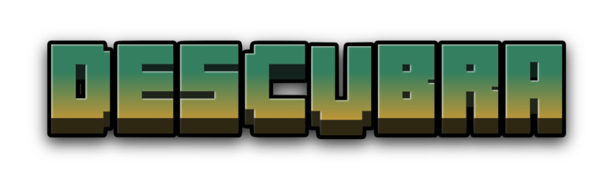
Minecraft Survival: Renascimento é um servidor de Minecraft criado por Lu_009 na versão Bedrock, ou seja, o servidor está disponível para console, PC e mobile! Para acessar o servidor, insira as seguintes informações na aba "Adicionar Servidor": IP: sd-br1.blazebr.com Porta: 25802 |
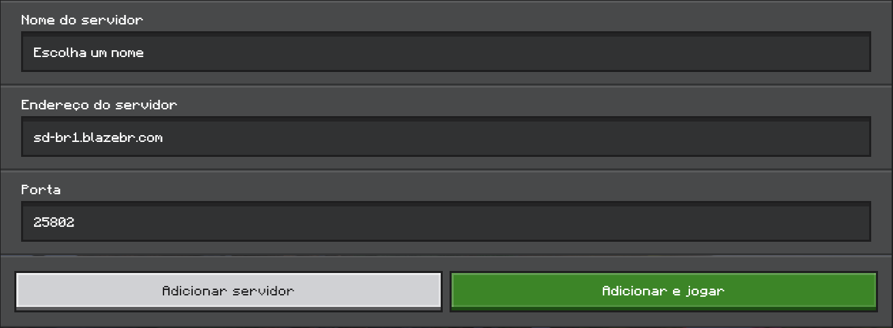 |

|
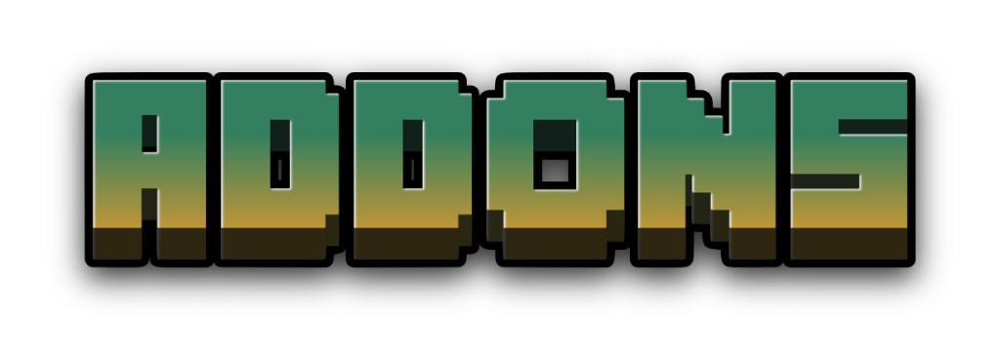
ADDONS são complementos do Minecraft, que podem ser ativados e habilitar funções que não fazem parte do jogo normal. Atualmente, existem 12 addons no Servidor, que estão listados abaixo. Todos foram tirados do site MCPEDL. |

| 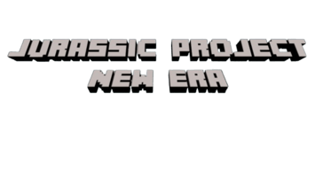 | 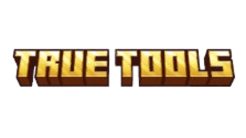 | 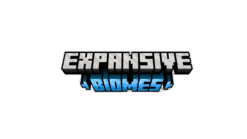 |
| 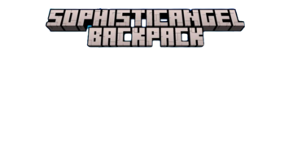 | 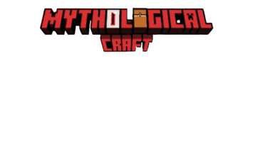 | |
| 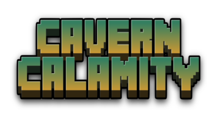 | 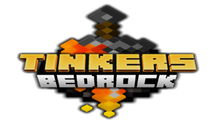 | 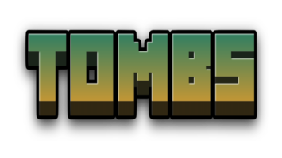 |
|
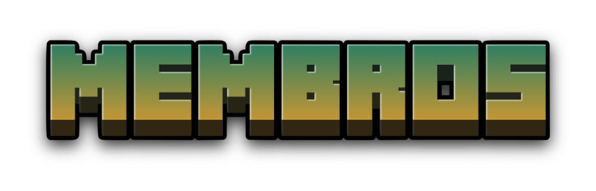
Membros, bom, a maioria não é muito ativa, mas ainda sim tem vários players ativos, como Sonne, sena1889, WilliamMWH, etc Veja a seguir, alguns membros e suas participações no servidor: |
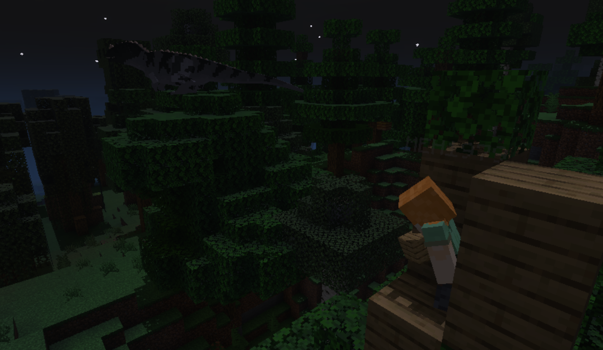 |
| 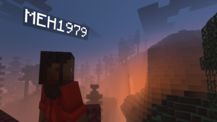 | 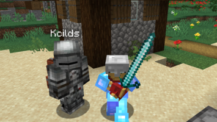 | 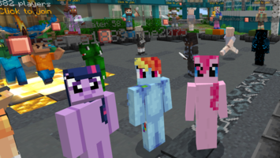 |
| 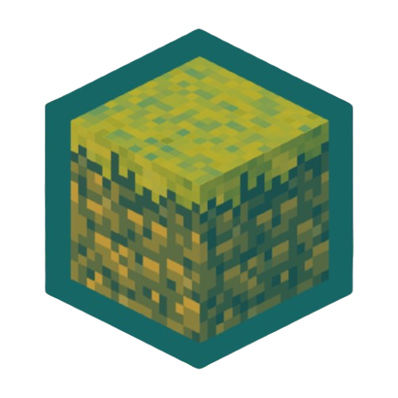 |
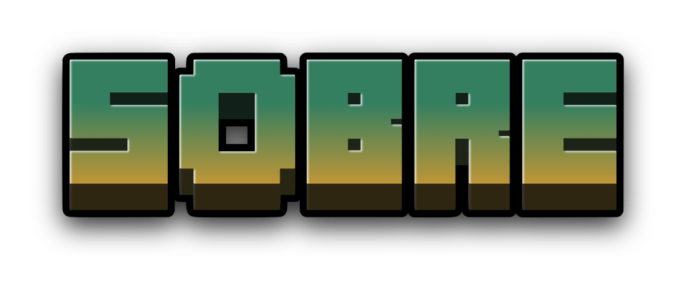
SOBRE o servidor, ele foi criado com o intuito de entreter os membros durante o período de férias e criar memórias assim como mundos e Realms anteriores (Mega PVP, Minecraft Survival: Retorno, etc). Espero que aproveitem! |